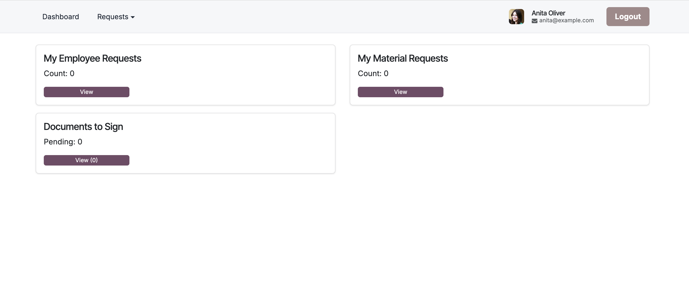
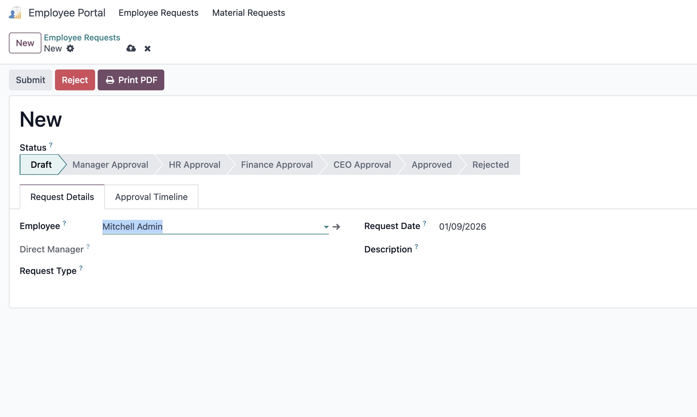
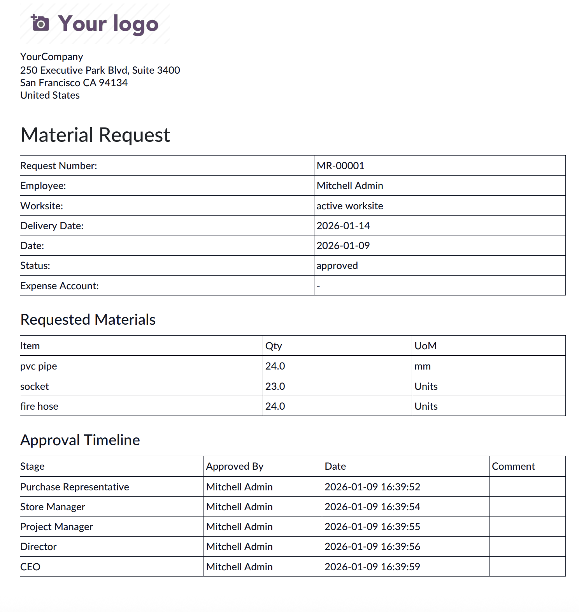
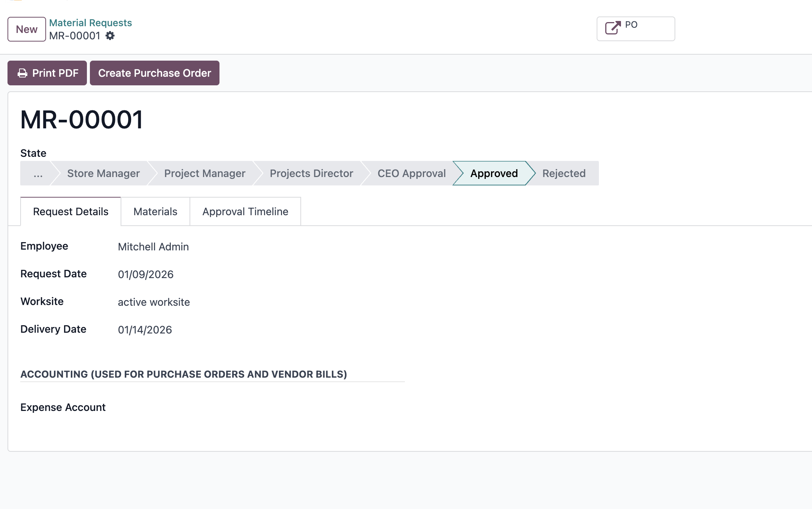
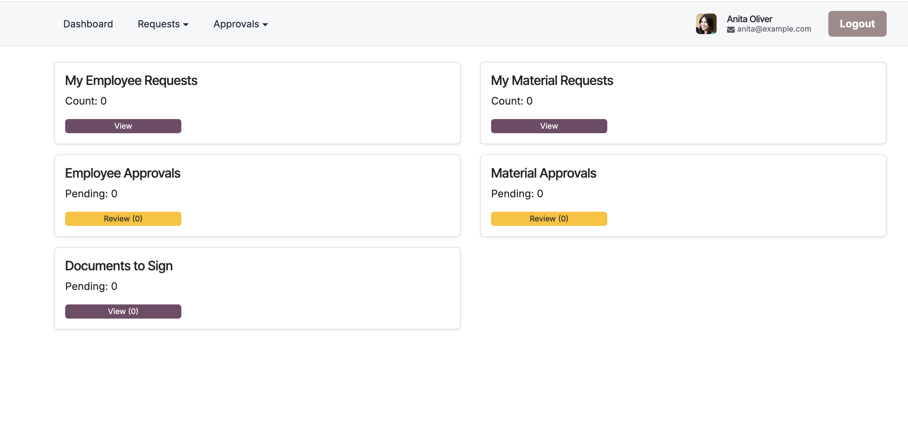
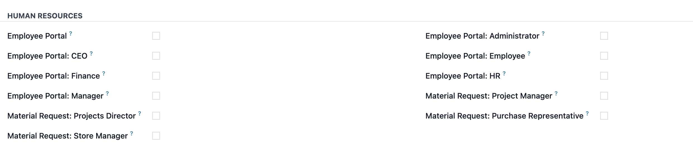

Employee Portal Suite extends Odoo with a secure self-service portal for employees and a unified approval center for managers, HR, finance teams, and executives. It is designed for companies that require structured internal workflows, full traceability, and clean user experience.
Employees access a clean and intuitive portal dashboard where they can submit requests, track approval status, and view documents awaiting signature — all without accessing the backend.
Employees can submit a wide range of internal requests such as leave, salary advance, training, medical reimbursement, asset requests, letters, transfers, and more.
Each request follows a structured approval flow:
Requests are automatically numbered, tracked, and fully logged with approval dates and comments.
Material Requests allow employees to request materials for projects or worksites with full approval control. Each request includes worksite, delivery date validation, materials list, and accounting information.
Approval stages are fully configurable and follow this flow:
Every request includes a detailed approval timeline visible in both the backend and the portal. Users can see exactly who approved each stage, when it was approved, and any comments added.
Rejections clearly show the rejection stage and reason, ensuring transparency and reducing follow-ups.
Once a Material Request is fully approved, the Purchase team can create Purchase Orders directly from the request.
The system automatically links Purchase Orders to the originating Material Request, displays PO numbers, and shows the current PO status (RFQ, Sent, Approved, Received, etc.).
Managers and approvers get a dedicated portal section where they can review pending Employee and Material Requests assigned to them.
Approvals are permission-based and respect project-specific roles such as Store Manager and Project Manager.
Each request type generates a professional PDF document including request details, materials, approval history, and signatures.
PDFs can be printed or shared directly from Odoo, ensuring proper documentation and audit readiness.
Employee Portal Suite uses dedicated security groups to ensure data isolation and correct access:
Employees only see their own requests, while approvers see only items assigned to their role.
